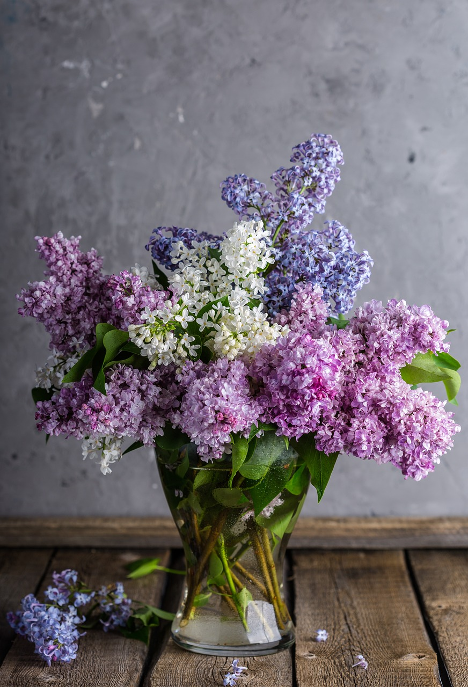
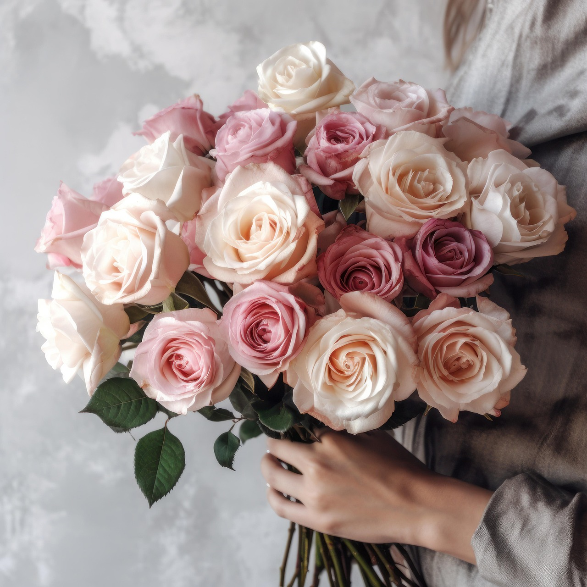

The love that flowers symbolize
Why Do People Care About Flowers So Much?
The thought of it
For most, the idea that they were even a thought on your mind is so important. You, without being asked thought: "I should get ___ some flowers today.", showing that they mean that much to you.
It makes people feel loved and appreciated.
Looking at little things that make the flowers a little more special
- Picking flowers that you know they like
- Picking flowers in their favourite colour
- Leaving a little note in the bouquet
Buy someone you love flowers today. There is literally a 0% chance that it won't make their day.
Check out out our Occasions page. It serves as a guide for what type of flowers to get depending on what special day you are having.